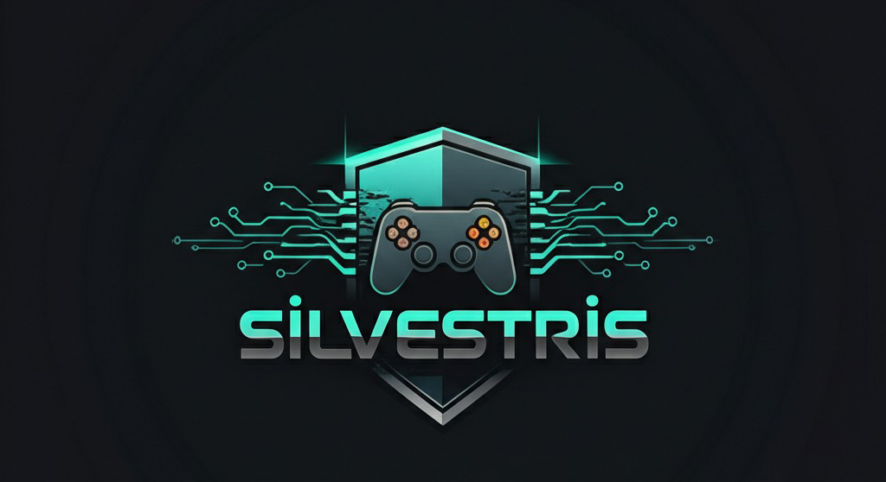

Who I Am

Hello! I'm Ali. Ever since my childhood, I've had a deep passion for the enchanting world of games and the boundless potential of software development. Since discovering how intertwined these two seemingly different worlds are, I've dedicated myself to improving in this field.
My deep love for games has led me beyond just being a player. I became curious about the complex systems behind each game, the fine details that shape the user experience, and that 'magical' touch that connects players. This curiosity guided me to the field of software development. Every new programming language I learned and every problem I encountered allowed me to gain a deeper understanding of how games and other interactive applications come to life. I am constantly improving my technical skills, especially by focusing on Metasploit.
In the software development process, I see every challenge I face as a learning opportunity. Solving complex algorithms, designing user-friendly interfaces, and successfully completing projects gives me great satisfaction. I have adopted the principle of working with a detail-oriented approach, exchanging ideas in collaborative environments, and always striving to achieve the best result. When involved in game development projects, I not only aim to meet the technical requirements but also to produce creative solutions that will enrich the player experience.
In this era of rapidly developing technology, I believe that learning and constantly renewing myself is vital. Therefore, I closely follow [insert the technologies you follow, learning resources, or courses you've taken here] and continuously improve myself in these areas. My future goal is to both take part in innovative software projects and leave my mark in the field of game development. I eagerly look forward to playing an active role in projects that users will enjoy, that offer solutions to problems, and that push the boundaries of technology.